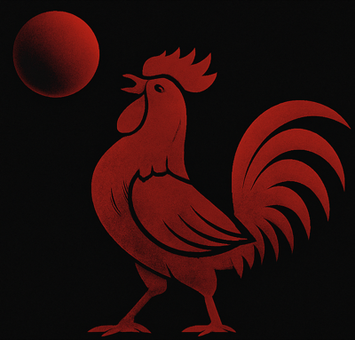
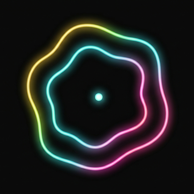

Mars Interactive/Loop - Ride the Wire
Game Description (Last Update: September 30, 2026)
📱 Available Platforms: 🍎 iOS (🤖 Android and 🎮 Steam: TBD)
📅 Loop Initial Release Date:
Loop is a neon arcade game about staying on the wire. You ride a glowing loop that keeps bending and stretching under you, with two lanes — inner and outer — and a single input: tap to switch. That's the entire control scheme. Everything else is timing, nerve, and reading the track a split second before it reads you.
Every lap is faster than the last. Spikes sit in your lane, and you have to be in the other one when they arrive. Black holes pull at the rail and swallow you whole, shield or no shield. Warp holes fling you ahead onto a wilder, faster ride. And once in a run, the world glitches, shatters, and hands you a completely different view of the same track — keep your rhythm or snap.
Loop takes seconds to pick up and is very hard to put down. Your run lasts exactly as long as you do, and your best is always one more loop away.
Loop is the one-more-run game for the thirty seconds you have, and the thirty minutes you didn't mean to spend.
The same design means Loop has no cloud save of its own: your scores live on the device you play on, and uninstalling the game removes them. And because Loop is a game made of light, it uses bright, fast-changing neon colors and flashing effects. If you or anyone in your family has a history of epilepsy or photosensitivity, please read the Health and Safety section of the Terms of Use before playing.
I'm Timothé, a solo developer operating under the nickname Mars Interactive for my development endeavors. I'm building tools for fun and to impact people' lives positively (hopefully). Loop is one of my apps, and I built it with zero guidance and assistance. Loop is 100% free, ad-free, offline, and private to your device alone.
If you're enjoying it and want to support ongoing development, you can Buy Me a Coffee here!
Note: Mars Interactive is not a registered legal entity, it is only a developer nickname used informally. The legal entity and owner of Loop, this document, and all included files is Timothé Ameline.